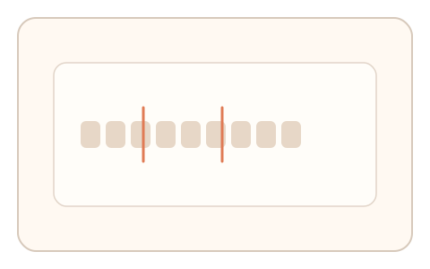
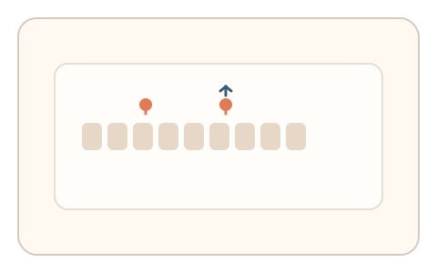
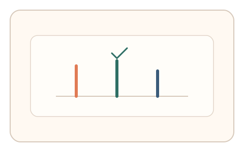

#71
视觉思考范式：文字与符号
已扩展
伪词分块直觉
让用户对无意义字母串进行“顺口分块”，利用边界位置与停顿节奏验证真实性。
概念原文
给出无意义字母串，让用户按“读起来顺口的分块”拖拽断开位置。记录分块位置、停顿与回撤次数。
捕捉人类在阅读中的“直觉分块”策略，而不是语义理解。
研究背景
人类阅读会依赖音节与发音习惯进行直觉分块，即使面对伪词也会产生稳定的分段倾向。分块位置、停顿与回撤反映了自然的认知过程，可作为行为信号。
核心机制
- 呈现无意义字母串，提供可拖拽的分隔点。
- 用户按“读起来顺口”的方式调整分块边界。
- 记录分块位置、停顿与回撤次数。
- 多轮不同字母串形成稳定分布。
用户流程
- 步骤 1：用户看到伪词与可调分隔点。
- 步骤 2：用户拖拽分隔点完成分块。
- 步骤 3：系统记录边界与节奏并判定。
判定信号
分块边界位置
人类分块会集中在特定发音边界附近。
停顿与回撤次数
真实分块通常伴随短暂停顿与微调。
判定逻辑
边界分布需符合人类分块倾向，并伴随合理停顿节奏；随机边界或无微调判异常。
对抗面
- 算法化分块或音节划分脚本
- 重放真实用户的拖拽轨迹
防御与缓解
- 使用含歧义的字母串与不同长度模式
- 引入轻微视觉扰动降低模板化
- 叠加拖拽时序与路径信号进行多信号判定
可达性与风险
提供大字号与高对比模式，允许键盘调整分隔点，并提供替代任务避免对阅读障碍用户造成压力。
- 语言背景差异导致分块偏好不同
- 阅读障碍用户可能增加误拒
可视化状态

状态 1：伪词呈现
无意义字母串与可调分隔点。

状态 2：拖拽分块
用户拖拽分隔点形成顺口分块。

状态 3：分块判定
对比边界与节奏形成判定。
参考资料
Syllabification
说明音节划分与分块规则。
Phonotactics
说明发音组合的直觉限制。